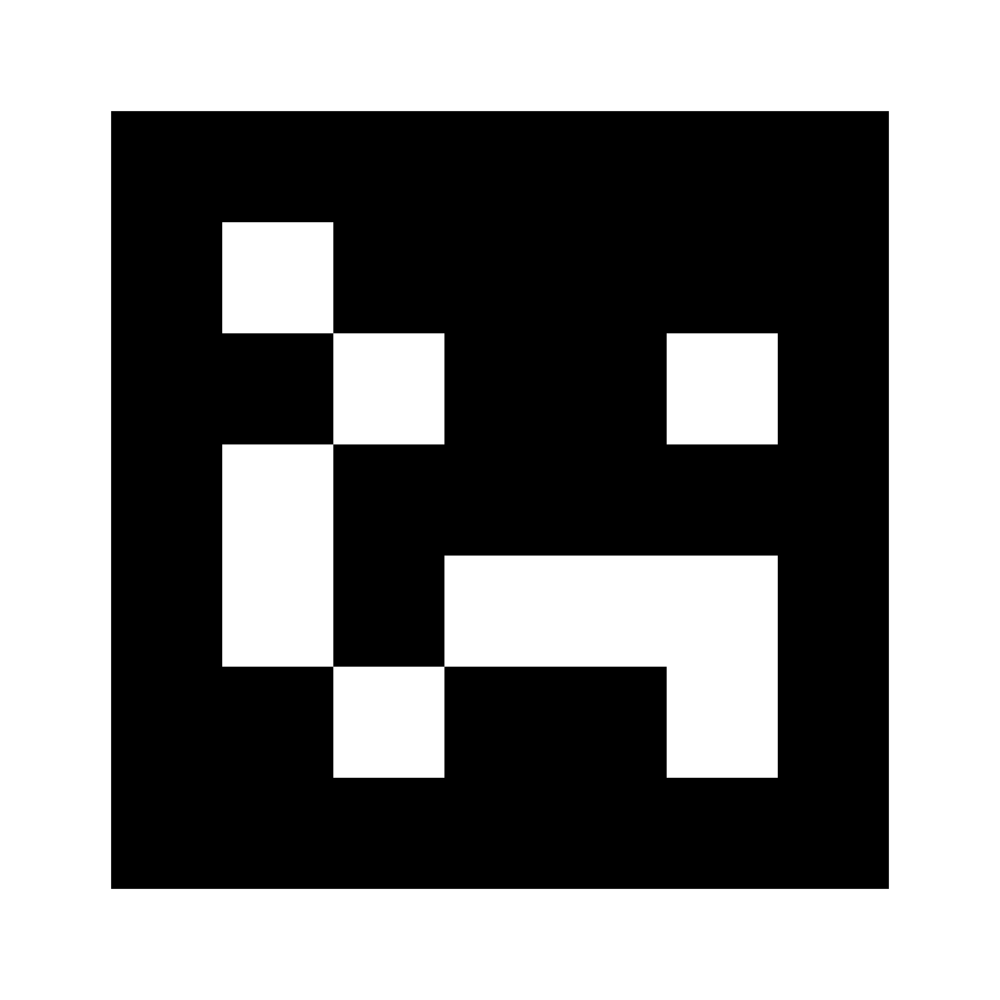

القطع المستكشفة: ٠ / ٤
جولة رقمية · ثقافة سعودية
قطع تراث أمام عدستك
أربع وقفات: خيمة، دلة، سيف، وأخيراً مبخرة. تُشير الكاميرا إلى الرموز ليظهر المجسم وتنتقل لصفحة قراءة تاريخه.
قبل ما تفتح الكاميرا
- ١جهّز الرموز الأربعة بأي ترتيب، مطبوعة أو معروضة على شاشة أخرى.
- ٢عند ظهور المجسم، ستنتقل لشاشة حرة لتكبيره وتدويره.
- ٣يمكنك في أي وقت تخطي الجولة لبناء متحفك الخاص!

الخيمة Hiro

الدلة Kanji

السيف حرف A

المبخرة صورة
القطعة الأثرية
اكتملت المجموعة!
لقد استكشفت جميع القطع الأثرية الأربع بنجاح. الآن أنت جاهز لتصميم مساحتك التراثية.
دخول المتحف الخاص